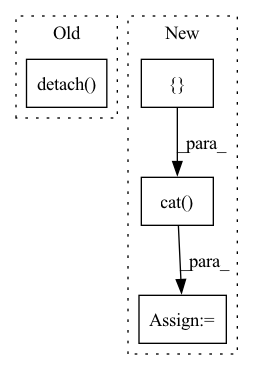

Pattern ID :1967
Before Change
cons_coefficient = sigmoid_rampup_value * FLAGS.max_consistency_cost
logit_l = netC(data)
logit_u = netC(data_u)
logit_ut = netC_T(data_u).detach()
loss_l = loss_cross_entropy(logit_l, label)
prob = softmax(logit_u)
prob_t = softmax(logit_ut)After Change
cons_coefficient = sigmoid_rampup_value * FLAGS.max_consistency_cost
lpi = FLAGS.num_label_per_batch
batch_input = torch.cat([ data[:lpi], data_u[lpi:], dim=0)
logit = netC(batch_input)
logit_ut = netC_T(batch_input).detach()
logit_l = logit[:lpi]
logit_u = logit
// logit_l = netC(data)
// logit_u = netC(data_u)
// logit_ut = netC_T(data_u).detach()In pattern: SUPERPATTERN
Frequency: 4
Non-data size: 4
Instances Fragment ID: 8758133
Project Name: taufikxu/triple-gan
Commit Name: 3cc843234eaca7587a39d425910b4fc1369f3d69
Time: 2020-07-03
Author: kunxu.thu@gmail.com
File Name: library/loss_cla.py
M Class Name: AnonimousClass
N Class Name: AnonimousClass
M Method Name: loss_MT_ssl(6)
N Method Name: loss_MT_ssl(6)
M Parent Class:
N Parent Class:
M File Name: library/loss_cla.py
N File Name: library/loss_cla.py
M Start Line: 122
M End Line: 130
N Start Line: 122
N End Line: 137
Before Change
set2_centre = set2.mean(-1).view(1, -1)
distance = (set1_centre - set2_centre).pow(2).pow(0.5).max(-1)[0].max(-1)[0]
delta_list = [distance / np.sqrt(2 * (i + 1)) for i in range(kernel_num)]
bandwidth_list = [((2 * delta ** 2)).detach() for delta in delta_list]
return bandwidth_list
After Change
def calc_bandwidth(first_kernel, third_kernel, kernel_num=20, max_scale=2.0, min_scale=0.1):
// * kernel: [batch_size, particle_num, particle_num]
kernel_mean = torch.cat([ first_kernel, third_kernel, dim=-1) .mean(-1).max(-1)[0]
particle_num = first_kernel.size(-1)
kernel_num
scale_list = list(np.linspace(min_scale, max_scale, num=kernel_num))
bandwidth_list = [(kernel_mean * scale).view(-1, 1, 1).detach() for scale in scale_list]
first_items = 0
third_items = 0
for h in bandwidth_list: Fragment ID: 8758134
Project Name: deligentfool/dqn_zoo
Commit Name: 1ac00bac8d92870064cdcf754b6e29278f14ae79
Time: 2020-11-04
Author: 1027660817@qq.com
File Name: MMD_DQN/mmd_dqn.py
M Class Name: AnonimousClass
N Class Name: AnonimousClass
M Method Name: calc_bandwidth(5)
N Method Name: calc_bandwidth(3)
M Parent Class:
N Parent Class:
M File Name: MMD_DQN/mmd_dqn.py
N File Name: MMD_DQN/mmd_dqn.py
M Start Line: 33
M End Line: 40
N Start Line: 18
N End Line: 33
Before Change
// Call up current contents of the queue, duplicate. Add targets to the queue,
// potentially overriding old information in the process. Return targets concatenated to contents of queue
batch_size = targets.shape[0]
queue_targets = self.queue.clone().detach()
self.queue[self.queue_ptr:self.queue_ptr + batch_size] = targets
self.queue_ptr = (self.queue_ptr + batch_size) % self.queue_size
merged_targets = torch.cat([targets, queue_targets], dim=0)
After Change
self.queue_scale[self.queue_ptr:self.queue_ptr + batch_size] = targets_scale
self.queue_ptr = (self.queue_ptr + batch_size) % self.queue_size
merged_loc = torch.cat([targets_loc, queue_targets_loc], dim=0)
merged_scale = torch.cat([ targets_scale, queue_targets_scale, dim=0)
merged_target_dist = Normal(loc=merged_loc, scale=merged_scale)
return context_dist, merged_target_dist
Fragment ID: 8758137
Project Name: humancompatibleai/eirli
Commit Name: fe1db70fb39da826492f3d53b12e21b64507cb2e
Time: 2020-07-13
Author: codywild@berkeley.edu
File Name: algos/batch_extenders.py
M Class Name: QueueBatchExtender
N Class Name: QueueBatchExtender
M Method Name: __call__(3)
N Method Name: __call__(3)
M Parent Class: BatchExtender
N Parent Class: BatchExtender
M File Name: algos/batch_extenders.py
N File Name: algos/batch_extenders.py
M Start Line: 39
M End Line: 44
N Start Line: 41
N End Line: 53
Before Change
old_action_probs, _ = self.actor(states)
old_action_probs.detach_()
old_values = self.critic(states).detach()
// prepared dataloader for auxiliary phase training
dl = create_shuffled_dataloader([states, old_action_probs, rewards, old_values], self.minibatch_size)
After Change
// gather states and target values into one tensor
states = []
rewards = []
old_values = []
for state, reward, old_value in aux_memories:
states.append(state)
rewards.append(reward)
old_values.append(old_value)
states = torch.cat(states)
rewards = torch.cat(rewards)
old_values = torch.cat( old_values)
// get old action predictions for minimizing kl divergence and clipping respectively
old_action_probs, _ = self.actor(states)
old_action_probs.detach_() Fragment ID: 8758138
Project Name: lucidrains/phasic-policy-gradient
Commit Name: d9741893dd66c02702e9640bd3d12b5bd68aaf4b
Time: 2020-09-29
Author: lucidrains@gmail.com
File Name: train.py
M Class Name: PPG
N Class Name: PPG
M Method Name: learn_aux(2)
N Method Name: learn_aux(2)
M Parent Class:
N Parent Class:
M File Name: train.py
N File Name: train.py
M Start Line: 225
M End Line: 245
N Start Line: 221
N End Line: 246